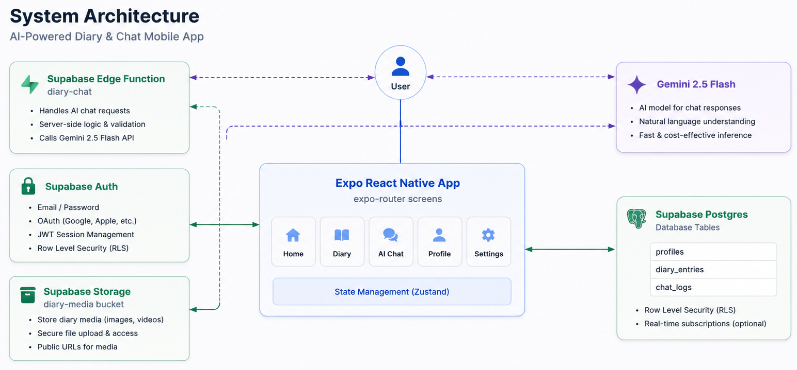
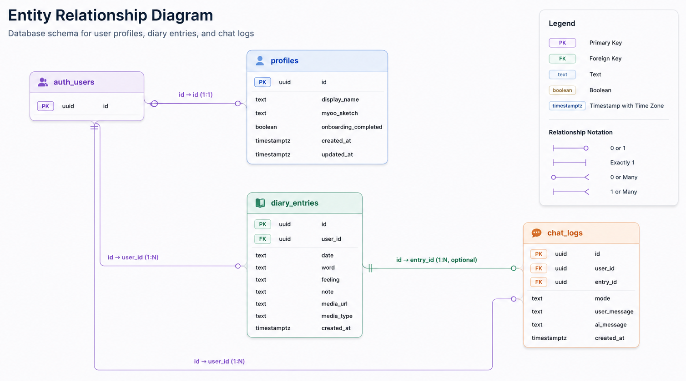
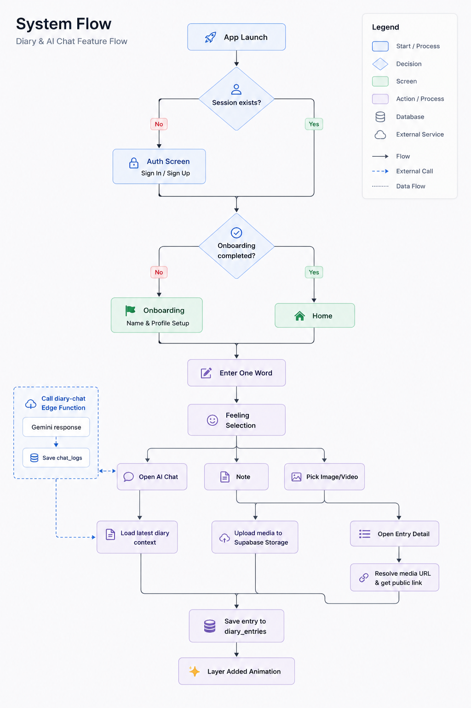
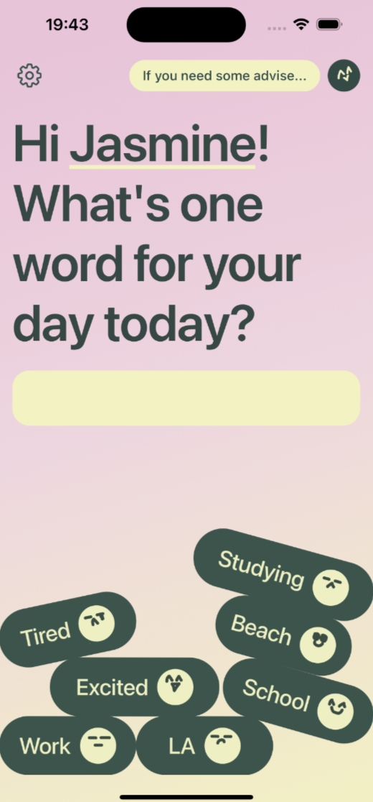
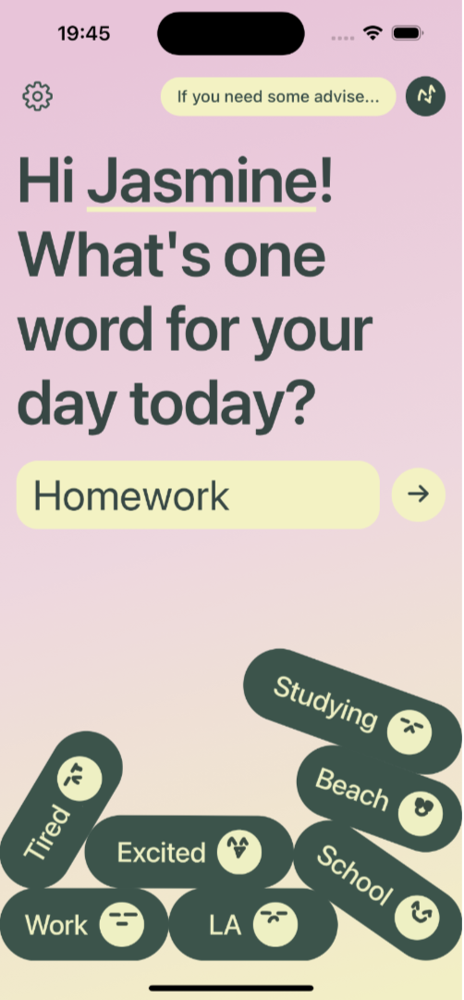
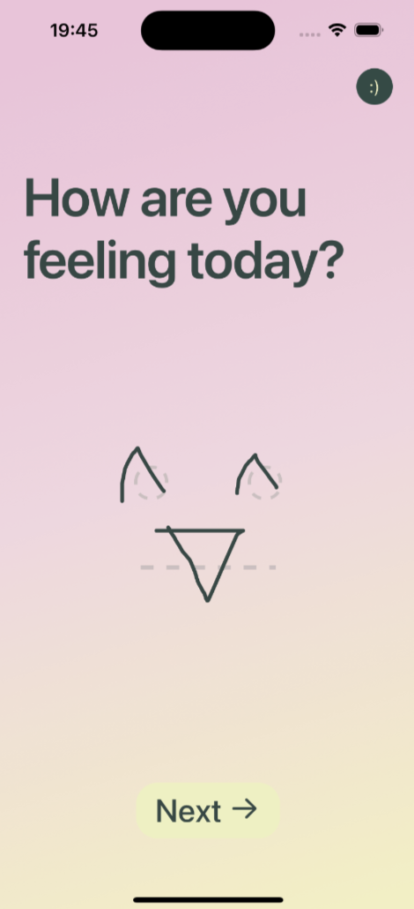
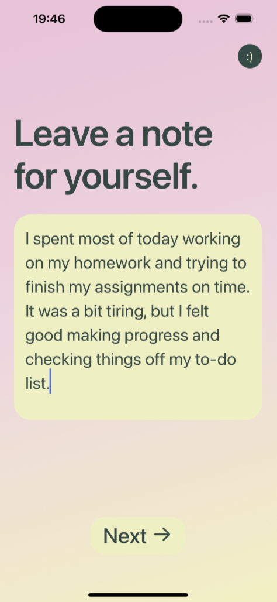
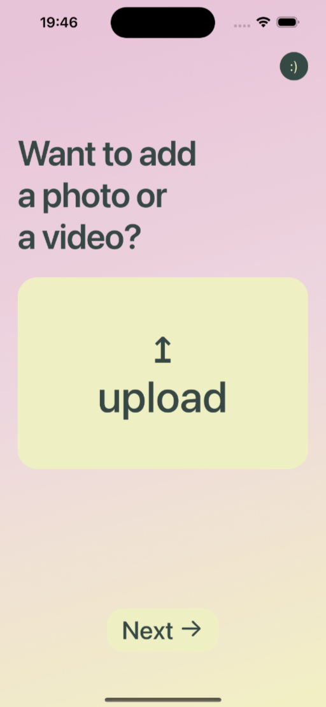
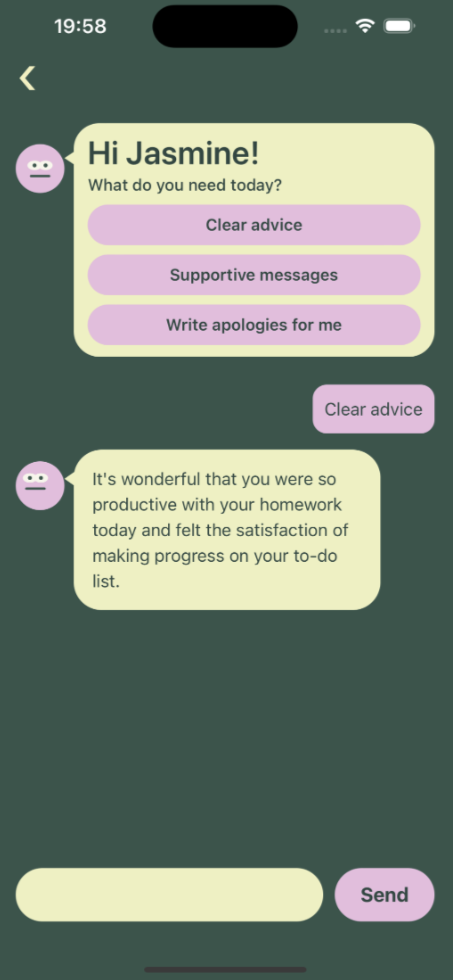
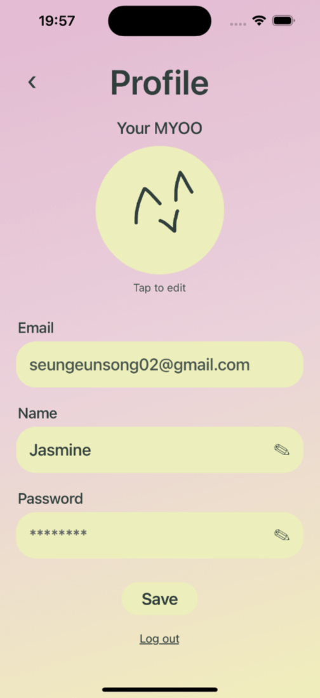

An AI-powered mobile journaling application that helps users record
emotions, reflect on daily experiences, and receive contextual
emotional support through conversational AI.
MYOO is a cross-platform mood journaling app that helps users record
emotions, write diary entries, and reflect through AI-powered
conversations. By combining personal journaling with contextual AI
responses, the app encourages users to better understand their
emotional patterns.
Tech Stack
React NativeExpoTypeScriptSupabaseGemini API
Architecture Diagram

ERD

Workflow

Users complete onboarding and create a profile.
Users record emotions and write journal entries.
Journal context is sent to the Gemini API.
The AI assistant generates context-aware responses based on the
user's journal history.
Product Walkthrough

01 · HomeMain journaling home experience




02 · UploadMedia upload flow for journal entries

03 · AI ChatContextual emotional support conversation

04 · ProfileUser profile and account settings
Key Features
Mood journaling and emotion tracking
AI-powered journal reflection chat
Media uploads for diary entries
User onboarding and profile management
Secure authentication and data protection with Supabase
My Contributions
Developed a cross-platform mobile application using React Native,
Expo, TypeScript, and Supabase.
Implemented onboarding, mood tracking, diary creation, profile
management, and media upload features.
Integrated the Gemini API to provide context-aware AI
conversations based on users' journal entries.
Built backend functionality using Supabase Auth, Postgres,
Storage, and Row-Level Security (RLS).
Challenges
Designing a journaling experience that felt simple and natural
while supporting AI-powered conversations.
Passing relevant journal context to the AI without making
conversations overly complex.
Managing authentication and secure storage for users' personal
journal data.
What I Learned
Learned how to build a cross-platform mobile application using
React Native and Expo.
Gained practical experience integrating AI features into a mobile
application using the Gemini API.
Improved my understanding of mobile authentication, file storage,
and access control with Supabase Auth, Storage, and RLS.
Learned how to structure and manage application state and
navigation in a React Native project.